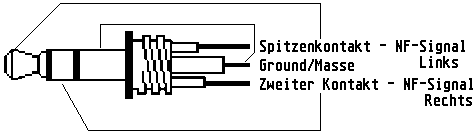

Previous
Next
TOC

Anschluß des Falcon030 an eine Stereoanlage:
In der Zuleitung/Anschlußleitung des Mikrofoneinganges müssen un-
bedingt in jeden Kanal ein 220 Kiloohm Widerstand (Reihenwider-
stand) eingelötet werden, damit Übersteuerungen und damit Schäden
am Computer vermieden werden.
Die Zuleitung/Anschlußleitung des Kopfhörerausganges kann direkt
per Adapter (Cinch-Stecker) z.b. an den AUX Eingang des Verstär-
kers/Receiver's angeschlossen werden.
Und jetzt noch die genauen Pegelwerte und die Impedanzen der
Falcon030 Audioanschlüsse:
Stereo Headphone Jack
The output port is a voltage with a peak voltage level of 3V, and
an RMS level of 2V. Ist is designed for a peak load of 0.25W; this
means that the load should have an impedance greater than 32 Ohm.
Stereo Microphone Jack
The effective impedance of the microphone port is:
2.15 K Ohm,
0 Hz -
30 Hz
1.77 K Ohm,
30 Hz - 900 KHz
0.00
Ohm,
>900 KHz
IMPORTANT: A 200K Ohm resistor should be used in series on each mi-
crophone input when connected to a 1V RMS "Line" level signal (such
as the Line Out signals from a CD Player)
Für die Taktrate 44.1 KHz ist ein externer Takt von 22.5792 MHz er-
forderlich und für 48 KHz ist ein externer Takt von 24.576 MHz er-
forderlich (beide Takte sind nicht im Falcon030 vorhanden!) der am
Pin 26 (EXCLK) vom DSP-Port eingespeist werden muß und die verwen-
dete Software muß das natürlich unterstützen!
Die Verknüpfungsschaltungsmöglichkeiten:
Source devices
EXT INPUT ---*-------*------*------*
CHANNEL
|
|
|
|
|
|
|
|
DSP
---*-------*------*------*
TRANSMIT
|
|
|
|
|
|
|
|
ADC
---*-------*------*------*
|
|
|
|
|
|
|
|
DMA
---*-------*------*------*
PLAYBACK
|
|
|
|
DMA
DAC
DSP
EXT OUTPUT
RECORD
RECEIVE
CHANNEL
Receiving Devices
weiterblättern
Kapitel Die Reparaturtips für den Falcon030, Seite 11